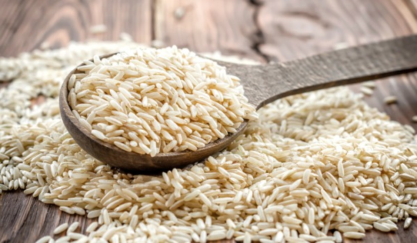
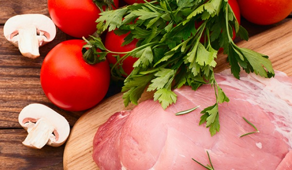
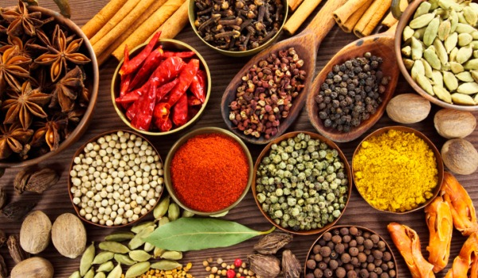
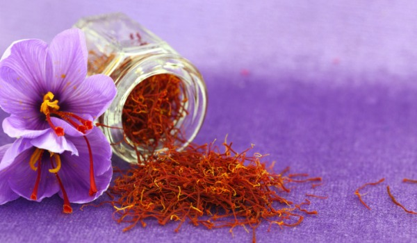

Choosing the perfect variety of rice is of the utmost importance. You can either go for the traditional Basmati or some of the local gems like Zeera Samba, Golden Sela, Kaima, Jeerakashala and Kala Bhaat. South India often cooks up its Biryanis using some of the local varieties of rice that render distinct taste, texture and aroma to the dish.

Your vegetables should be garden fresh and cooked separately while meat should be of the finest quality. Fish, prawns and vegetables take lesser time to cook over big chicken chunks or meat pieces. The cooking time therefore depends a lot on the ingredients used. When cooking with meat/chicken, ensure using small, soft tender portions to facilitate quicker cooking. Meat/chicken should be marinated well before cooking with rice.

A wide range of aromatic spices come together to create a beautiful pot of Biryani. The use of spices differs from region to region. Coconut Milk, Cream, Yogurt, Buttermilk are often used in preparing some of the most sensational Biryanis while the spices include the regular affair. Kerala is famous for using Star Anise in its rice preparations. Khada Masala - ungrounded spices/whole spices - is widely used to render a distinct flavour to the preparation.

A perfect Biryani can never be bereft of the sensational aroma. A quintessential Biryani is always studded with a scented element which takes the aromatic quotient to yet another level. Jasmine, Rose, Kewra, Saffron and Screw-pine are widely used for this purpose.
